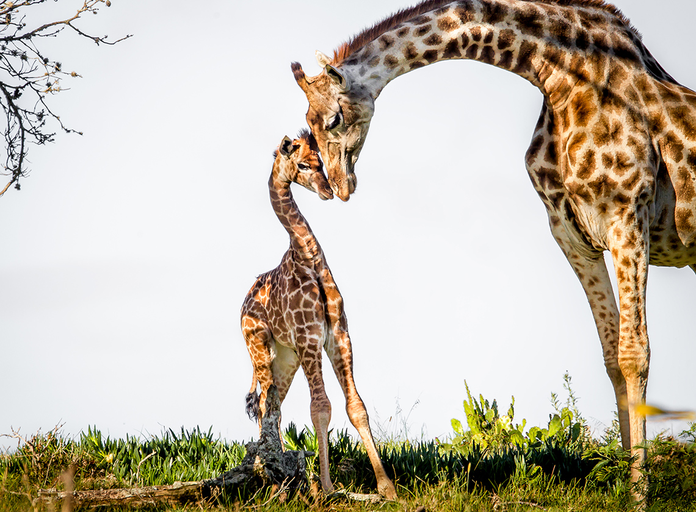

На самом жарком континенте обитают самые высокие на Земле животные – жирафы. Одну треть роста составляет шея. А ещё у жирафов прекрасные длинные и быстрые (что немаловажно!) ноги. И конечно, «пятна-пятна-пятна-пятнышки везде» – как мы знаем из детской песни. Жираф ни на кого не похож. И за свою удивительную внешность и миролюбивый нрав стал для человека настоящим символом спокойствия, нежности, мудрости и заботы.
Слово «жираф» на многих языках состоит из двух слов и всегда построено на сравнении с верблюдом. Так, на латыни – Pantherocamelus («пантеро-верблюд»). А в русском «жираф» – это заимствование из французского giraffe. Французы так назвали животное, познакомившись с Зарафой, прибывшей из Египта в Париж и 18 лет прожившей в столичном зоопарке. Её кличка – Зарафа – в переводе с арабского звучала как «нарядная». Сказочная, но абсолютно реальная история из XIX века легла в основу создания французского мультипликационного фильма «Жирафа» (2013).
